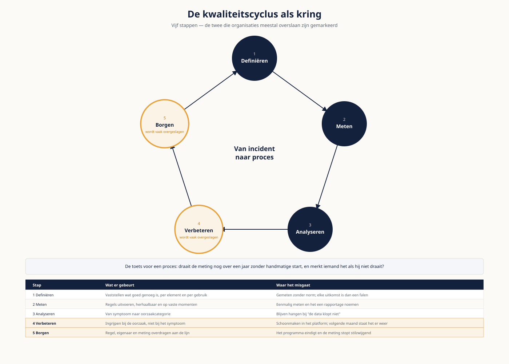

Van project naar proces
⏱ 20 minMeridiaan heeft één kwaliteitsrapportage: acht regels op vier velden, eenmalig gemaakt in het eerste kwartaal van 2026. Er zijn geen drempelwaarden, geen eigenaren per regel, en er is geen vervolg. Dat is het patroon dat je in vrijwel elke organisatie aantreft: kwaliteit als project, niet als proces.
In deel 4 leerde je een bevinding onderbouwen. Hier maak je er een lopend proces van dat blijft draaien nadat jij weg bent. Dat vraagt drie dingen die in een project ontbreken: regels die zichzelf uitvoeren, een remediatiepad met eigenaarschap, en afspraken tussen leverancier en afnemer over wat er wordt geleverd.
Leerdoelen
- Je ontwerpt een meetplan dat aansluit op kritieke data-elementen en op de keten.
- Je vertaalt kwaliteitsregels naar code en kiest een uitvoeringsplek in de keten.
- Je voert een root cause analysis uit die verder komt dan het symptoom.
- Je ontwerpt een remediatie-workflow met prioritering, eigenaarschap en terugkoppeling.
- Je stelt een data contract op en benoemt wat er gebeurt bij overtreding.
- Je ontwerpt een kwaliteitsdashboard dat tot actie leidt in plaats van tot berusting.
- Je borgt de inrichting zodat zij blijft draaien zonder programma.
De kwaliteitscyclus
De kwaliteitscyclus kent vijf stappen. Organisaties die vastlopen, doen er meestal twee: meten en analyseren. De andere drie zijn waar de blijvende verandering zit.
| Stap | Wat er gebeurt | Waar het misgaat |
|---|---|---|
| Definiëren | Vaststellen wat goed genoeg is, per element en per gebruik | Er wordt gemeten zonder norm; elke uitkomst is dan een falen |
| Meten | Regels uitvoeren, herhaalbaar en op vaste momenten | Eenmalig meten en het een rapportage noemen |
| Analyseren | Van symptoom naar oorzaakcategorie | Blijven hangen bij "de data klopt niet" |
| Verbeteren | Ingrijpen bij de oorzaak, niet bij het symptoom | Schoonmaken in het platform; volgende maand staat het er weer |
| Borgen | Regel, eigenaar en meting overdragen aan de lijn | Het programma eindigt en de meting stopt stilzwijgend |
Draait de meting nog over een jaar, zonder dat iemand hem handmatig start? En merkt iemand het als hij niet draait? Is het antwoord op één van beide nee, dan heb je een project gebouwd en geen proces — hoe goed de eerste rapportage ook was.

Uit Werkboek deel 15, Zelftoets, vraag 1 en 2